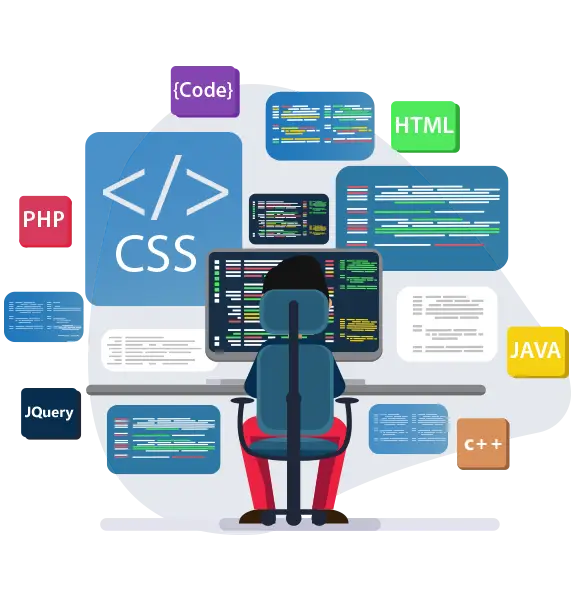

Hi My name is Deepak.
and Welcome to My Portfolio. I am a

Project
Stock Price Prediction by Python
In this project, I had to use Python to create a
website. For providing scientific computing, data
analysis, and higher-level mathematics wrapped in
Python, I used the NUMPY library, together with the
STREAMLIT, PLOTLY, and PROPHET libraries. I use
STREAMLIT. Set up a tool and building blocks that
make it easy to quickly develop interactive web
pages. I use the PROPHET library for time series
forecast data that includes seasonality, intensity,
and holiday effects. The PLOTLY library is what I use
for effective data visualisation and distracting
charts, graphs, and dashboards in Python
Railway Ticket Reservation web site by ASP.NET
In this project,I used Asp.net to design the website for this project.
In that, I built a web form, a GUI, and a database
link with MySql. I input the train information,
including the date, time, and available day, on the
dashboard. I developed a login webform where I
collected user information.
E-commerce web site
In this project, I have used HTML and CSS to create a web page for this
project that features a wide variety of products, including
shoes, t-shirts, watches, and smartphones. In this project,
I employed several tags for creating online forms and
CSS to design them with data links that leverage SQL
databases. I also created a web form, a registration form,
a login form, and a dashboard.
Published Research Paper on Haptic Technology
In this research, I investigate haptic technology, including
its nature, workings, applications for AI tools, and
algorithms. I also look into how it is used to its full
potential in a number of industries, including medicine,
business, defence, and education.
Online Examination System by (php)
The objective test administration process over the internet is
facilitated by the web-based online examination system project, which was created using PHP and
MySQL.
Users can register for tests and get special user credentials using the online examination
system. Users are typically examinees. To access the exam interface and log into the system, use
these credentials. After logging in, the system displays the exam questions to the user, who has
a set amount of time to submit their responses.
My Portfolio Web Site
I use my knowledge of HTML, CSS, AND JavaScript.
In this project, I use a variety of HTML tags to create a web page and CSS to design the
website.